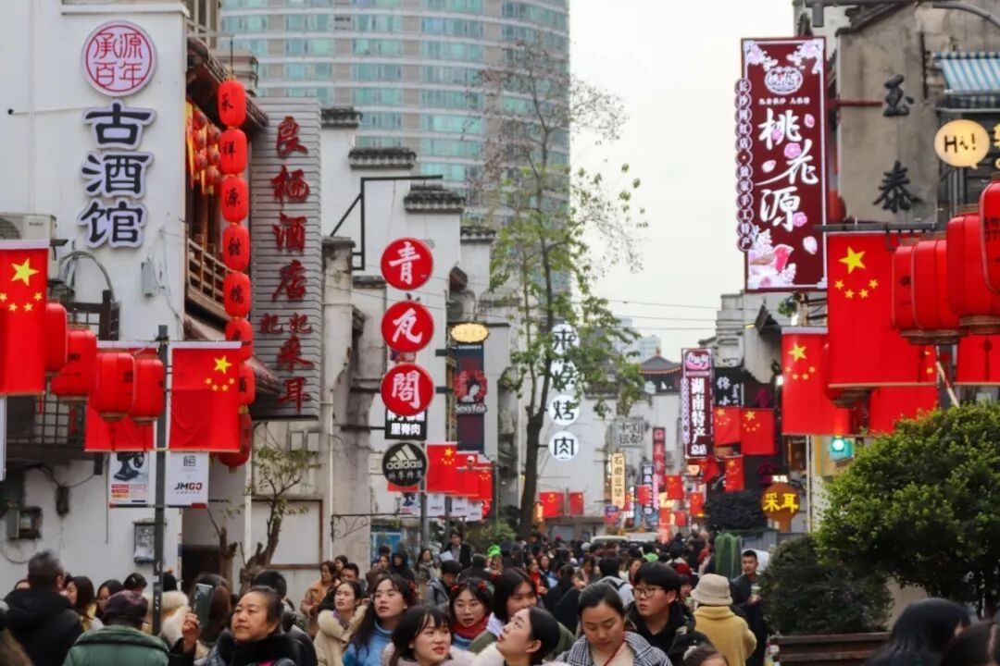
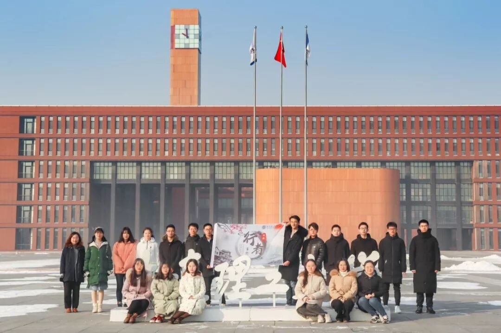
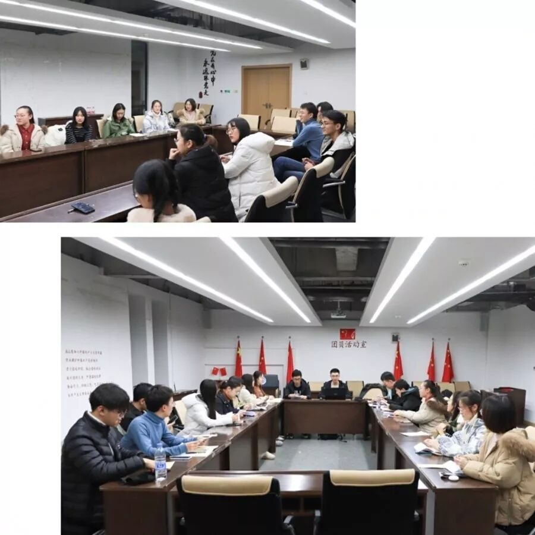
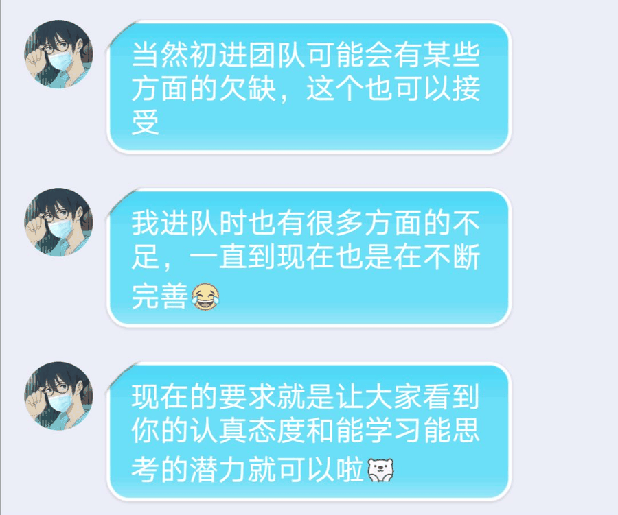
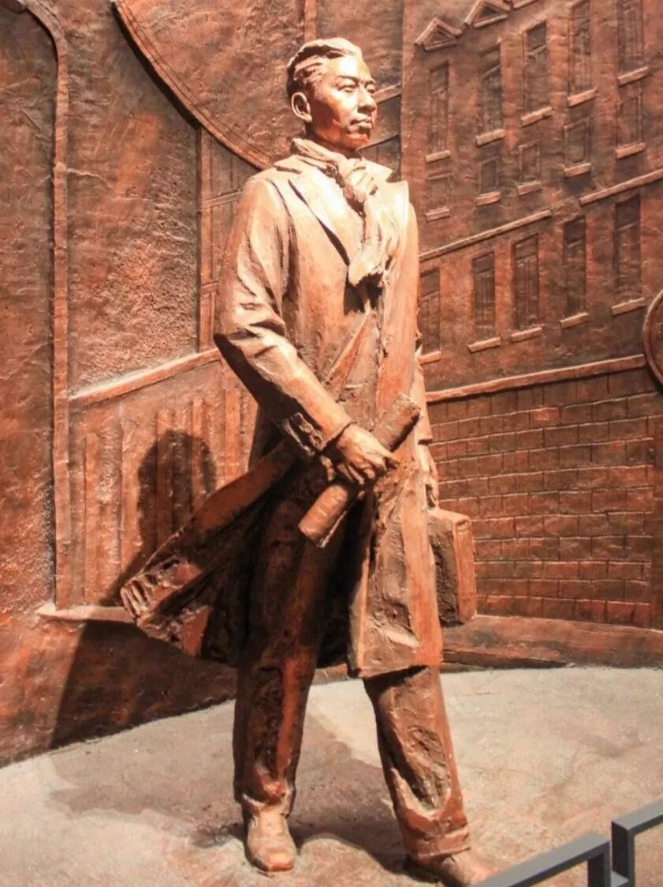
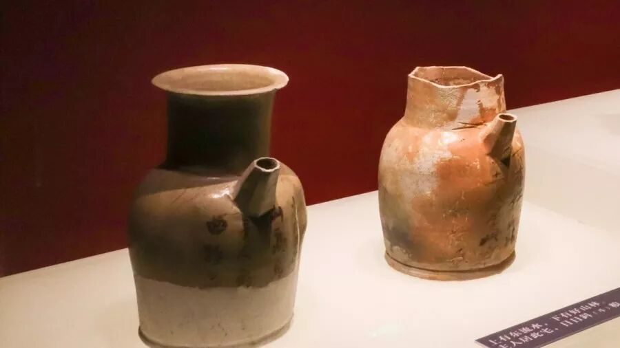
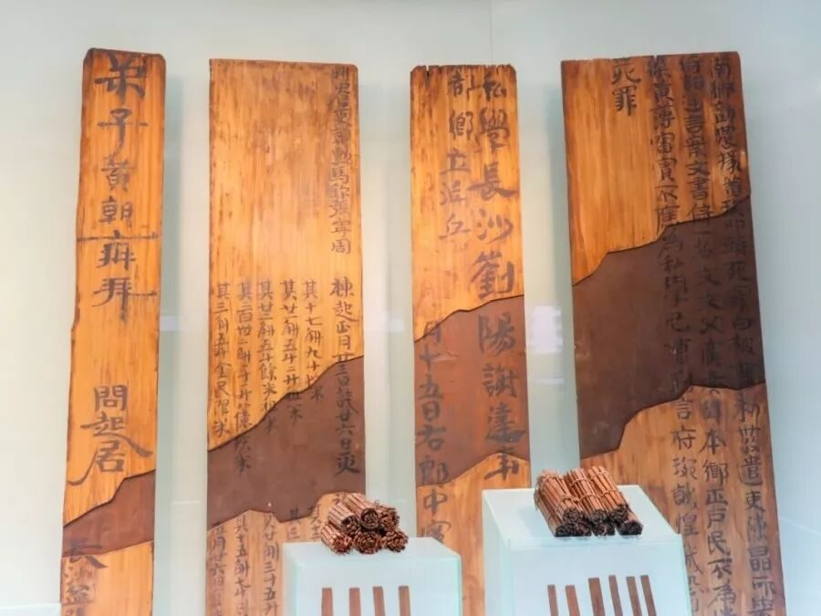
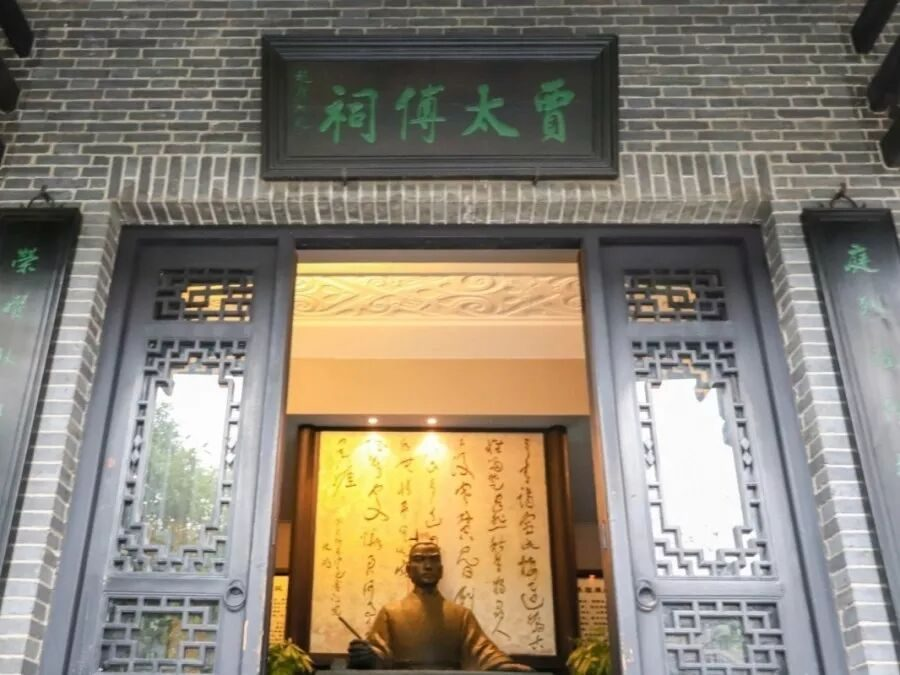
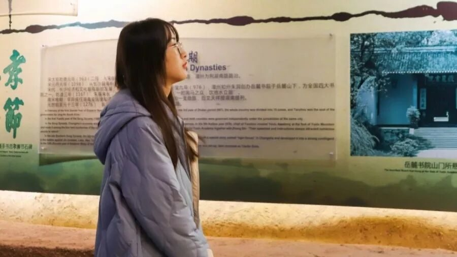

【赋墨沉湘·十二】以为是初遇，其实是久别重逢


遇见行者，是一种缘分。
爱上行者，是一种幸福。
想念行者，是一种习惯。
2019年之于我，有一种别样的意义。短短半年，走出奋笔疾书的考场，走向精彩纷呈的大学，在未知与迷茫中辗转徘徊，所幸在转角处，我遇到行者无疆。在楼梯口偶然拍下的招募海报，在寝室里字斟句酌地敲下报名表，在寒风凛冽的夜里心怀忐忑参加面试，收到录取邮件后的欣喜若狂……一切都在按部就班地进行，却又像是冥冥注定。


“大一新生没有经验可以参加吗？”，小心翼翼地询问得到这样的回复，直接打消了我心头的顾虑。我意识到，这不是与行者的第一次相见，而是与一颗火热真挚的心的重逢，这里是一群肩负使命、心怀远大的青年，是步履不停的探索者，是所有流淌着热血的人的旧相识。
再访长沙，不同于作为游客时的心境，已是别样风情。
奢靡繁华的步行街中掩藏着百年老街，现代化的高楼大厦中坐落着千年古居，时间与空间的奇妙融合，给文化添上一层神秘面纱。深入长沙，我们走过千年学府岳麓书院，走过湘绣、剪纸博物馆，走过靖港古镇，走过简牍博物馆，走过刘少奇、毛泽东纪念馆，走过贾谊故居，走过橘子洲头，用脚步丈量文化的长度。
长
沙
湖湘文化诞生于湘楚文化，历经宋明时期中原洗礼，绵延至今，形成了湖南人刀刚火辣、爱憎分明、直率坦荡的性格，心忧天下、敢为人先、经世致用、实事求是等思想历久弥新，仍然能带给我们极大震撼。每晚开会时的思考交流碰撞出一连串火花，裹挟着深厚的文化底蕴一路烧到心底，唤醒最原始的文化崇拜，激发源源不断的动力，不禁慨叹一句“楚材斯盛”！只消用心探寻，便能收获满满，行走的脚步更加坚定。





行至此，言念潇湘的旅程刚刚落幕，就已经迫不及待地期待下一次的出发。行者就是拥有这样的魅力，即使旅途中有酸甜也不乏苦辣，却始终叫人沉迷。从一无所知到初出茅庐，就像一种传承，一如经久不衰的文脉，这传承中有你、有我。


明明知道你我已跋涉千里
却又觉得芳草鲜美、落英缤纷
好像你我才初初相遇
致行者：“你眸中有山川河流，胜过我行经路过的一切不朽。”
END
来源 | 行者无疆实践团
文字 | 王婧霖
排版 | 吕丰元
审核 | 段智然 康艳虎 黄玲
行者无疆实践团
QQ：2758025831

随行者一起认识世界
长按二维码